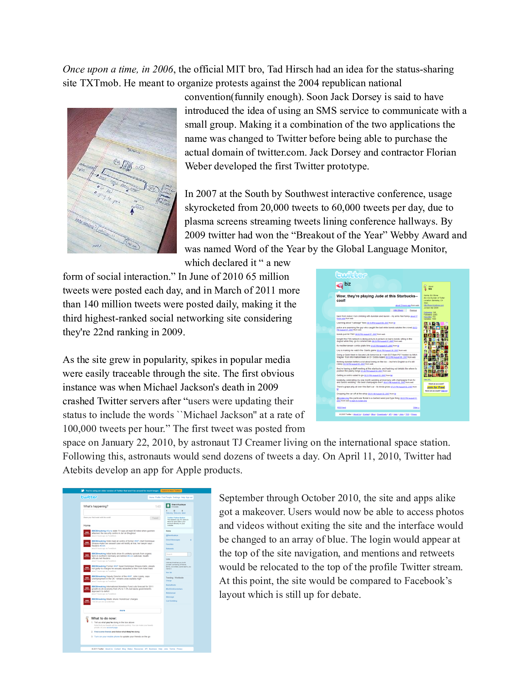

Homepage
just setting up my twttr
— jack (@jack) March 21, 2006
Does anyone think global warming is a good thing? I love Lady Gaga. I think she's a really interesting artist.
— Britney Spears üåπüöÄ (@britneyspears) February 10, 2011
im at knots berry farms n my butts 2 big 2 fit in da seats on ride. ahhhhhh (dats me yellin)
— SHAQ (@SHAQ) August 20, 2009
Always in my heart @Harry_Styles . Yours sincerely, Louis
— Louis Tomlinson (@Louis_Tomlinson) October 2, 2011
— Perfectly Cut Screams (@AAAAAGGHHHH) September 24, 2019
TAke a look, y'all: IMG_4346.jpeg
— Stephen A Smith (@stephenasmith) May 27, 2015
is meatball an fruit
— Post Malone (@PostMalone) July 16, 2018Challenge accepted! #bottletopchallenge pic.twitter.com/Rygijd6z5W
— Mariah Carey (@MariahCarey) July 7, 2019
AAAAAAAAAAAAAHHHHHRHRGRGRGRRRGURBHJB EORWPSOJWPJORGWOIRGWSGODEWPGOHEPW09GJEDPOKSD!!!!!!!!!!!!!!!0924QU8T63095JRGHWPE09UJ0PWHRGW
— Lady Gaga (@ladygaga) November 7, 2012
nightmares are so embarrassing bro like u literally made up a guy and got scared of him
— thomas (Bad Boy arc) üçå (@perfectsweeties) December 8, 2023
found the road from the “road work ahead” vine pic.twitter.com/bkiuxhxbSl
— rainbolt (@georainbolt) October 7, 2022
I wonder what happened there? RT @necolebitchie: Vid Of Solange Attacking JayZ In An Elevator http://t.co/nS69hQWmb4 pic.twitter.com/UHwOGShR7s
— I Make it look Easy (@theQspot) May 12, 2014
No caption needed lol happy Dramagedon 3.0 folks pic.twitter.com/sInBQYPV4P
— alexa (@ItDoBeAlexa) June 30, 2020
The four horsemen of bad YouTuber apology videos. Colleen Ballinger, James Charles, Shane Dawson, & Laura Lee. pic.twitter.com/0MqOjfQ6Ti
— Dallas Ryan (@thedallasryan1) June 29, 2023
Joe Biden eats ice cream better than you do: http://t.co/6R0HaTz5OC pic.twitter.com/A2tC8JTm38
— New York Magazine (@NYMag) October 9, 2014
A sparkling sphere of stars! ⭐
— Hubble (@NASAHubble) December 8, 2023
This #HubbleFriday view shows the globular star cluster NGC 2210. These stars are bound together by their mutual gravity!
NGC 2210 is about 11.6 billion years old: https://t.co/3w1qCRW2N9 pic.twitter.com/OsCmnaRS7u
Whats going on with mycareer
— Cher (@cher) August 18, 2012
Everything happens so much
— Horse ebooks (@Horse_ebooks) June 28, 2012
Food $200
— wint (@dril) September 29, 2013
Data $150
Rent $800
Candles $3,600
Utility $150
someone who is good at the economy please help me budget this. my family is dying
Me sowing: Haha fuck yeah!!! Yes!!
— The Golden Sir (@screaminbutcalm) March 12, 2019
Me reaping: Well this fucking sucks. What the fuck.
— Chadwick Boseman (@chadwickboseman) August 29, 2020
The History of Twitter
The Most Liked Tweets of Each Year
2006
just setting up my twttr
— jack (@jack) March 21, 2006
2007
"Word up!" It is I, the Gray Lady, with a "shoutout" to all my hip young friends. Just wanted you to know I've added new specialized feeds.
— The New York Times (@nytimes) March 21, 2007
2008
2009
2010
2011
2012
I'm safely on the surface of Mars. GALE CRATER I AM IN YOU!!! #MSL
— Curiosity Rover (@MarsCuriosity) August 6, 2012
2013
It's with a heavy heart that we must confirm Paul Walker passed away today in a tragic car accident...MORE: http://t.co/9hDuJMH99M - #TeamPW
— Paul Walker (@RealPaulWalker) December 1, 2013
2014
If only Bradley's arm was longer. Best photo ever. #oscars pic.twitter.com/C9U5NOtGap
— Ellen DeGeneres (@EllenDeGeneres) March 3, 2014
2015
2016
"To all the little girls watching...never doubt that you are valuable and powerful & deserving of every chance & opportunity in the world."
— Hillary Clinton (@HillaryClinton) November 9, 2016
2017
HELP ME PLEASE. A MAN NEEDS HIS NUGGS pic.twitter.com/4SrfHmEMo3
— Carter Wilkerson (@carterjwm) April 6, 2017
2018
Let's set a world record together and get the most retweeted tweet on Twitter. Beating the current world record held by Yusaku Maezawa @yousuck2020 (5.3 million!)
— World Record Egg (@egg_rt_record) January 14, 2019
We got this üôå pic.twitter.com/VkMPwJo9GI
2019
#InMyFeelingsChallenge #HopeOnTheStreet pic.twitter.com/Bm8bxtKsFq
— Î∞©ÌÉÑÏÜåÎÖÑÎã® (@BTS_twt) July 23, 2018
2020
— Chadwick Boseman (@chadwickboseman) August 29, 2020
2021
It’s a new day in America.
— Joe Biden (@JoeBiden) January 20, 2021
2022
Next I’m buying Coca-Cola to put the cocaine back in
— Elon Musk (@elonmusk) April 28, 2022
2023
Oh hi lol pic.twitter.com/pLxkLDu0Qs
— Elon Musk (@elonmusk) June 18, 2023
A Brief Written History
Personal Tweets
Elon Musk Sucks
choose his fate

Credits of Twitter Archive
Created by: Priscella Dolang, Maggie Dougherty, Sydney Kim, David Ordonez